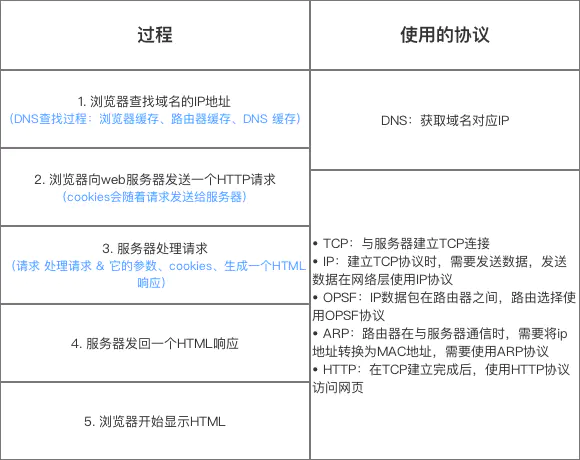

计算机网络
参考地址：https://www.jianshu.com/p/45d27f3e1196
1、计算机网络结构
1.1 简介
定义
计算机网络各层 + 其协议的集合作用
定义该计算机网络的所能完成的功能
1.2 结构
计算机网络体系结构分为三种：
- OSI体系结构
- TCP/IP体系结构
- 五层体系结构
- OSI体系结构：概念清楚 & 理念完整，但复杂 & 不实用
- TCP / IP体系结构：含了一系列构成互联网基础的网络协议，是Internet的核心协议 & 被广泛应用于局域网 和 广域网
- 五层体系结构：融合了OSI 与 TCP / IP的体系结构，目的是为了学习 & 讲解计算机原理
| OSI体系结构(7层) | TCP/IP协议体系(4层) | 五层体系结构(5层) |
|---|---|---|
| 7.应用层 | 4.应用层 (HTTP) | 5.应用层 |
| 6.表示层 | ||
| 5.会话层 | ||
| 4.传输层 | 3.运输层 (TCP、UDP) | 4.运输层 |
| 3.网络层 | 2. 网际层 (IP) | 3.网络层 |
| 2.链路层 | 1.网络接口层 | 2.链路层 |
| 1.物理层 | 1.物理层 |
低三层为通信子网，负责数据传输
高三层为资源子网，相当于计算机系统，完成数据处理；
传输层承上启下
TCP/IP体系结构详细介绍
由于 TCP / IP体系结构较为广泛，故主要讲解
| 层级 | 作用 | 传输单位 | 功能 | 具体协议 |
|---|---|---|---|---|
| 1、网络接口层 | 负责与链路(传输媒介)的数据运输工作 | 帧 | 组帧、差错控制、流量控制和运输管理 | EIA-232C、CCITT的X.21 SDLC、HDLC、PPP、STP、帧中继 |
| 2、网际层 | 为不同主机提供通信服务：网络层的分组数据从源端传到目的端 | 数据报 | 封装数据成分组/包、路由选择 流量控制、拥塞控制、差错控制 & 网际互连 | IP协议、ARP协议、RARP协议、ICMP协议、IGMP协议、IPX、OSPF |
| 3、运输层 | 为不同主机进程间提供通信服务 | 报文段TCP、用户数据报UDP | 为端到端的连接提供可靠的传输服务、流量控制、差错控制、数据传输管理服务 | TCP协议、UDP协议 |
| 4、应用层 | 定义应用进程间通信 & 交互的规则 | / | / | HTTP协议 DNS协议 SMTP协议 POP协议 FTP协议 SMB协议 Telnet协议 SSH协议 |
2、TCP协议
Transmission Control Protocol，即 传输控制协议
- 属于 传输层通信协议
- 基于TCP的应用层协议有HTTP、SMTP、FTP、Telnet 和 POP3
关于TCP具体信息，可以查看 TCP协议
3、UDP协议
3.1 定义
User Datagram Protocol，即 用户数据报协议
- 属于 传输层通信协议
- 基于UDP的应用层协议有 TFTP、SNMP 与 DNS
3.2 特定
无连接的、不可靠的、面向报文、无拥塞控制，具体介绍如下：
| 特定 | 描述 |
|---|---|
| 无连接 | 使用UDP传输数据前，不需要建立UDP连接 |
| 不可靠 | UDP数据包传输后，不管数据接收包是否接收到 |
| 面向报文 | 数据以数据报文的形式传输 |
| 无拥塞控制 | 由于是不可靠传输，即不考虑是否接收到数据，所以也就不需要拥塞控制 |
3.3 优缺点
- 优点：速度快
- 缺点：数据容易丢失
3.4 应用场景
要求通信速度高
- 域名转换：DNS协议
- 文件传输：FTP协议
- 网络管理：SNMP协议
- 远程文件服务器：NFS协议
3.5 TCP & UDP 的区别
| 类型 | 特点 | 性能 | 应用场景 | 首部字节 | |||
|---|---|---|---|---|---|---|---|
| 是否面向连接 | 传输可靠性 | 传输形式 | 传输效率 | 所需资源 | |||
| TCP | 面向连接 | 可靠 | 字节流 | 慢 | 多 | 要求通信数据可靠 | 20-60 |
| UDP | 无连接 | 不可靠 | 数据报文段 | 快 | 少 | 要求通信速度快 | 8字节，由4个字段组成 |
4、HTTP协议
5、Socket
6、Other
6.1 在浏览器中输入url地址 ->> 显示主页的过程
打开一个网页，整个过程会使用哪些协议

6.2 IP地址（IPv4地址）
定义
连接在Internet中的每一台主机（或 路由器）的全球唯一的标识符组成
IP地址 = 32位 = 网络号 + 主机号；即IP地址::={<网络号>，<主机号>}
其中：
网络号：标志主机（或路由器）所连接到的网络。一个网络号在整个因特网范围内必须是唯一的。
主机号：标志该主机（或路由器）。一个主机号在它面前的网络号所指明的网络范围必须是唯一的。
不同类型的IP地址，其主机号 & 网络号所占字节数不同； 故：一个IP地址在整个网络范围内是唯一的
- 分类
传统的IP地址是分类的地址，分为A，B，C，D，E五类
区别在于网络号 & 主机号占的字节数不同
6.3 ICMP协议
- 定义
Internet Control Message Protocol，即 网际控制报文协议
- 属于IP层协议
- 注：ICMP报文不是高层协议，而是作为IP层数据报的数据，加上数据报首部，组成IP数据报发出去
作用
更有效地转发IP数据包 & 提高交付成功的机会分类
ICMP差错报告报文 & ICMP询问报文主要应用
PING（分组网间探测）、Traceroute（跟踪1个分组从源点到终点的路径，原理 = 从源主机向目的主机发送一连串的IP数据报）
6.4 Ping的过程
- 定义
Packet InterNet Groper，即分组网间探测
- 是 ICMP报文的1个重要应用：使用了IPCM回送请求 & 回送回答报文
- 是应用层直接使用网络层ICMP的1个例子，无经过传输层的TCP、UDP
作用
测试2个主机的连通性原理
- 向目的主机发送多个ICMP回送请求报文
- 根据 目的主机返回的ICMP回送回答报文中的时间戳，从而计算出往返时间
- 最终显示的结果：发送到目的主机的IP地址、发送 & 收到 & 丢失的分组数、往返时间的最小、最大 & 平均值